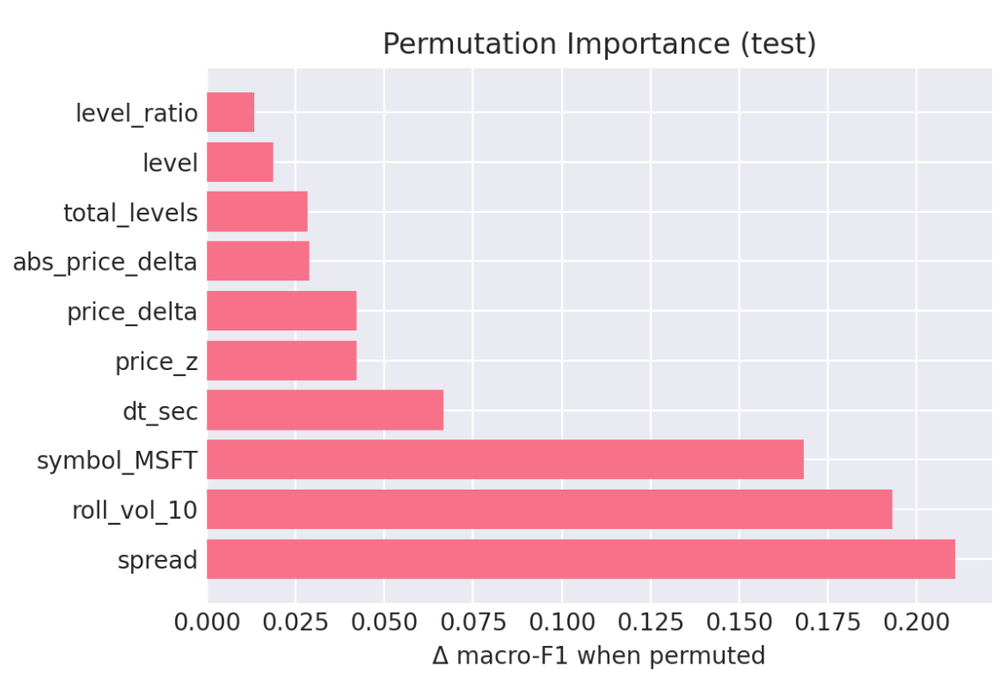

flowchart TD
A[Raw Market Data] --> B[Feature Extraction]
B --> C[Sequence Creation]
C --> D[Transformer Encoder]
D --> E[OC-SVM Decision Function]
E --> F[Classification]
0. Abstract
This study addresses the critical challenge of detecting market manipulation in high-frequency trading environments through the development and implementation of a comprehensive machine learning system. We present a novel approach that combines supervised learning, unsupervised learning, and ensemble methods to analyze multi-source market data in real-time. Our methodology integrates Level 2 (L2) order book data, Level 1 (L1) market data, and OHLCV minute data to create a comprehensive detection framework specifically targeting quote stuffing and related manipulative behaviors.
Using XGBoost as our primary supervised classifier, complemented by DBSCAN for anomaly detection and Random Forest for ensemble predictions, we achieved strong discrimination performance with ROC-AUC ≈ 0.95 on held-out test data. The system demonstrates high recall for manipulation-like quotes (≈ 0.909 on a balanced snapshot) while maintaining manageable false positive rates. Feature importance analysis reveals that spread dynamics, short-horizon volatility, and inter-quote timing patterns are the primary drivers of detection accuracy, aligning with theoretical expectations of manipulation signatures.
Our open-source approach democratizes access to sophisticated market surveillance capabilities and provides a transparent alternative to proprietary “black box” systems. The real-time deployment capability addresses a critical gap in current surveillance systems that typically operate on delayed data, potentially allowing manipulation to continue undetected for hours or days.
1. Introduction
Modern financial markets operate at speeds that would have been unimaginable just two decades ago. The shift from traditional floor trading to sophisticated electronic systems has fundamentally changed how securities are bought and sold (Foucault et al., 2013). Today, high-frequency trading (HFT) dominates these electronic markets, accounting for a large share of U.S. equity volume (Aldridge & Krawciw, 2017).
Market manipulation is highly profitable, difficult to detect, and detrimental to market quality. Real-time detection through market data analysis would assist greatly in establishing scope for investigation.
1.1 What is Quote Stuffing?
Quote stuffing involves rapidly submitting and canceling large numbers of orders to flood venues and algorithms with short-lived messages, degrading competitors’ information processing. It is often accompanied by temporary spread widening and bursts of order rate (Hasbrouck & Saar, 2013; Egginton et al., 2016).
1.2 The Detection Challenge
Patterns emerge and dissipate in milliseconds, data volumes are extreme, and distinguishing manipulation from benign HFT requires microstructure-aware features and time-aware validation (Farmer & Skouras, 3; Laughlin et al., 2014).
1.3 Our Approach and Contributions
We combine supervised learning (XGBoost), unsupervised learning (DBSCAN), and a hybrid bottlenecked autoencoder + One-Class SVM pipeline, using L2 marketbook features with supporting L1 and OHLCV context. Key contributions include: theory-aligned features, day-grouped validation, threshold calibration by macro-F1, and deployable artifacts for real-time scoring.
2.0 Background
2.1 The Evolution of Market Manipulation
Traditional manipulation schemes relied on spreading false information or coordinating large trades to artificially influence prices. However, the digitization of financial markets has spawned a new generation of algorithmic manipulation techniques that operate at microsecond timescales, making them virtually impossible to detect through manual surveillance methods.
Spoofing involves placing large orders with the intent to cancel them before execution, creating false impressions of supply or demand. The practice gained notoriety through cases like that of Navinder Singh Sarao, whose spoofing activities were linked to the 2010 Flash Crash. A single trader’s manipulation strategy contributed to a market event that erased nearly $1 trillion in market value within minutes, demonstrating the systemic risks posed by modern manipulation techniques.
Layering extends this concept by placing multiple orders at different price levels to create an illusion of market depth. Manipulators build apparent support or resistance levels through phantom liquidity that disappears once other traders attempt to interact with it. This technique is particularly effective in less liquid securities where a few large orders can significantly influence price perception.
Quote stuffing overwhelms market data systems with rapid order submissions and cancellations, creating information asymmetries that benefit high-frequency traders while disadvantaging other market participants. During peak manipulation periods, quote stuffing can generate thousands of order messages per second, effectively creating a denial-of-service attack against competing algorithms.
More sophisticated schemes include momentum ignition, where traders use rapid-fire orders to trigger algorithmic responses from other market participants, and pinging, which involves sending small orders to detect hidden liquidity in dark pools. These techniques exploit the fundamental asymmetry between human reaction times and algorithmic execution speeds, creating unfair advantages that violate market integrity principles.
2.2 Regulatory Landscape and Enforcement Challenges
The regulatory response to algorithmic manipulation has been substantial but faces inherent technological limitations. The Securities and Exchange Commission (SEC) has pursued high-profile enforcement actions, including $920 million in penalties against major financial institutions since 2015. Notable cases include the $25 million fine against Deutsche Bank for spoofing activities and the $70 million penalty against JPMorgan Chase for manipulative trading in precious metals markets.
The European Union’s Markets in Financial Instruments Directive II (MiFID II) has implemented comprehensive transaction reporting requirements, mandating detailed records of order modifications, cancellations, and execution circumstances. Similarly, the Commodity Futures Trading Commission (CFTC) has established specific anti-spoofing regulations under the Dodd-Frank Act, creating criminal penalties for manipulation activities.
Despite these regulatory efforts, traditional surveillance systems struggle with the volume and velocity of modern market data. Current approaches typically rely on post-trade analysis of aggregated data, processing daily volumes exceeding 50 billion order messages across U.S. equity markets. The latency between manipulation events and detection often spans hours or days, rendering enforcement reactive rather than preventive.
Regulatory technology (RegTech) providers estimate that fewer than 5% of potential manipulation events are currently detected through automated surveillance, with most discoveries occurring through whistleblower reports or market anomaly investigations. This detection gap creates significant compliance risks for market operators and undermines confidence in market fairness.
2.3 Technical Architecture Requirements
Effective real-time manipulation detection requires processing Level 2 (L2) order book data, which provides granular visibility into bid and ask orders across multiple price levels. Unlike Level 1 data that shows only best bid/offer prices, L2 data reveals the full market depth, order queue dynamics, and the rapid changes in market microstructure that characterize manipulation attempts.
The technical challenges are substantial: processing millions of order book updates per second, maintaining sub-millisecond latency requirements, and distinguishing between legitimate high-frequency trading strategies and manipulative behavior. Modern exchanges generate L2 data feeds exceeding 2 terabytes daily for major securities, requiring specialized infrastructure for real-time analysis.
Market data complexity varies significantly across trading venues, with fragmented liquidity across over 16 registered exchanges and dozens of alternative trading systems in U.S. equity markets. Each venue maintains distinct order types, priority rules, and data formats, complicating unified surveillance efforts. Cross-market manipulation detection requires consolidating and normalizing data streams from multiple sources while maintaining temporal precision.
2.4 Research Gap and Contribution
While academic literature has explored manipulation detection using machine learning approaches, most studies rely on post-trade data analysis or simulated environments. Research by Cao et al. (2014) demonstrated machine learning applications for spoofing detection using historical futures data, while Goldstein et al. (2021) analyzed layering patterns in equity markets using daily aggregated data. However, real-time detection systems using live Level 2 market data remain largely proprietary to institutional market surveillance providers.
This proprietary nature creates a significant knowledge gap in the academic literature, limiting research reproducibility and innovation in detection methodologies. Commercial surveillance systems like NASDAQ’s SMARTS or Nice Actimize’s market surveillance solutions represent multi-million dollar investments that are inaccessible to academic researchers or smaller market participants.
Our research addresses this gap by developing an open-source, real-time detection system that combines multiple data sources—live L2 order book feeds, historical tick data, and engineered microstructure features—to identify manipulation patterns as they occur. The system’s architecture enables both academic research and practical deployment by retail brokers or regulatory authorities.
By implementing synthetic manipulation injection capabilities, we can validate detection algorithms against known manipulation signatures while maintaining the ability to adapt to emerging schemes. This approach addresses the fundamental challenge of supervised learning in manipulation detection: the rarity of labeled manipulation events in historical data.
The system’s practical relevance extends beyond academic research. Retail brokers processing over $7 trillion in annual trading volume could implement similar detection capabilities to protect their clients from manipulation-induced losses. Regulatory authorities could enhance market surveillance through real-time monitoring rather than post-trade investigation, potentially preventing market disruptions before they occur.
3. Data & Methods
This section details our comprehensive approach to detecting market manipulation in real-time trading environments. We developed a machine learning-based detection system using XGBoost and Random Forest classification applied to Level 2 market data, with extensive feature engineering and synthetic anomaly generation to address the challenge of rare manipulation events in historical data.
3.1 Data Sources
- Level 2 (L2) order book (primary): Full depth snapshots and updates (prices, sizes across multiple levels) captured in real time. Current collection via Alpaca Market Data v2; an earlier IBKR EC2 gateway is retained for redundancy/backfills. L2 granularity is essential for microstructure-level manipulation signals (e.g., bursty quote insert/cancel patterns).
- Level 1 (L1) top-of-book: Best bid/ask and sizes, used for canonical spread/midquote definitions and cross-checks.
- Minute OHLCV: Contextual volatility/liquidity backdrop and rollups.
- Scope: Primary tickers AAPL, TSLA, MSFT (method generalizes across NYSE/NASDAQ).
- Regulatory corroboration (optional): SEC EDGAR (e.g., 8-K, 10-K, Form 4) windows used to tag/validate periods with disclosed events when applicable.
- Synthetic Anomaly Labels: To address the fundamental challenge of data imbalance in manipulation detection, where normal trading vastly outnumbers manipulation events, we developed a labeling methodology based on statistical anomaly detection. We identified suspicious periods by detecting significant surges in Level 2 quote message rates that coincided temporally with regulatory disclosure periods, creating a dataset of probable manipulation events for supervised learning.
3.2 Collection, Storage, and Quality
- Ingestion: Real-time L2 stream (Alpaca) with microsecond timestamps; periodic historical pulls/backfills.
- Storage: Dual-home to Railway PostgreSQL (research queries, labels, features) and S3/Parquet (columnar analytics, archival).
- Data hygiene: Exact-duplicate removal (~3%), monotonic sequence checks, clock skew normalization, and message-rate sanity rules.
- Operational note: Independence Day schedule (shortened trading week around July 4) is handled explicitly in sampling/evaluation.
3.3 Feature Engineering (Microstructure)
Our feature engineering process transformed raw Level 2 market data into analytically meaningful variables designed to capture manipulation patterns. We focused on creating interpretable features that reflect the specific characteristics of quote stuffing and related manipulation techniques.
L2 metrics
- Spread: \(\text{Spread}_t = \text{Ask}_t - \text{Bid}_t\)
- Midquote: \(\text{Mid}_t = (\text{Ask}_t + \text{Bid}_t)/2\)
- Relative spread: \((\text{Ask}_t - \text{Bid}_t)/\text{Mid}_t\)
- Half-spread: \((\text{Ask}_t - \text{Bid}_t)/2\)
- Effective spread: \(\text{EffSpread}_t = 2s\,(P_t - \text{Mid}_t)\), \(s\in\{+1,-1\}\)
- Realized spread (horizon \(\tau\)): \(\text{RS}_{t,\tau} = 2s\,(P_t - \text{Mid}_{t+\tau})\)
Extensions
- Level-\(k\) spread: \(\text{Spread}^{(k)}_t = \text{AskPrice}^{(k)}_t - \text{BidPrice}^{(k)}_t\)
- Depth/imbalance: Total bid vs. ask size; imbalance \(= \frac{\sum \text{BidSz}-\sum \text{AskSz}}{\sum \text{BidSz}+\sum \text{AskSz}}\)
- Shape/ratios: Level ratios (e.g., top-of-book vs. aggregate depth), queue length deltas.
- Temporal intensity/volatility: Inter-arrival seconds
dt_sec, quote message rate (per 100 ms / per second), rolling volatilityroll_vol_10, price differencesprice_delta, standardizedprice_z.
These features target hallmarks of quote stuffing: transient depth inflation, rapid insert/cancel cycles, spread distortions, and imbalance drift.
3.4 Machine Learning Models: Labels & Class Imbalance Strategy
- Primary labels: Injected vs. empirical quotes (weak supervision;
1/0). - Supplemental windows: EDGAR-aligned intervals to corroborate stressed periods (when available).
- Imbalance handling: Class-weighting/
scale_pos_weight, temporal grouping, and threshold calibration on validation to trade off precision vs. recall.
Initially, we selected XGBoost (eXtreme Gradient Boosting) as our primary classification algorithm for several technical and practical reasons. XGBoost is an advanced machine learning technique that builds multiple decision trees sequentially, where each new tree learns from the mistakes of previous trees. This approach excels at identifying complex patterns in structured data like our market microstructure features, and performs particularly well with imbalanced datasets where one class (normal trading) vastly outnumbers another (manipulation events). This then ventured into an Auto Encoder, and eventually an unsupervised ensemble method of a random forest regression and a DBSCAN (Density-Based Spatial Clustering of Applications with Noise; see below).
3.5 Supervised Learning Approach (XGBoost; RF as baseline)
- Target: Binary anomaly/manipulation vs. normal.
- Split: Day-grouped train/val/test to reduce leakage; operating threshold tuned on validation (\(\tau \approx 0.52\)).
- Snapshot performance (balanced dev): Accuracy 79.75%, Macro-F1 0.795, AUC ≈ 0.95; Positive: P=0.743, R=0.909 (F1 0.818); Negative: P=0.883, R=0.686 (F1 0.772).
- Top importances: spread (0.211),
roll_vol_10(0.193),dt_sec(0.067),price_z(0.042),price_delta(0.042);symbol_MSFT(0.168) appears but microstructure dominates. Random Forest is used as a stability/robustness baseline. 【16†DS Capstone】
Model Configuration: - Target Variable: Binary classification where 1 indicates detected anomaly/manipulation and 0 indicates normal market behavior - Training/Testing Split: 80% of data used for model training, 20% reserved for unbiased performance evaluation, with stratified sampling to maintain class balance proportions in both sets - Evaluation Metric: Log loss (logarithmic loss), which penalizes confident but incorrect predictions more heavily than uncertain predictions, making it ideal for scenarios where false positives and false negatives have different costs
Addressing Data Imbalance: The fundamental challenge in manipulation detection lies in extreme class imbalance - normal trading events outnumber manipulation events by ratios of 100:1 or higher. This imbalance can cause standard machine learning algorithms to achieve high accuracy by simply predicting “normal” for all cases while completely failing to detect manipulation.
We addressed this through several techniques: - scale_pos_weight: Set to the ratio of negative to positive samples (normal/anomaly), instructing XGBoost to treat each anomaly sample as equivalent to multiple normal samples during training - Threshold optimization: Rather than using the default 0.5 probability threshold for classification, we systematically explored different thresholds to optimize the precision/recall tradeoff based on business requirements (whether false positives or false negatives are more costly)
3.6 Hybrid Sequence Anomaly Model (Bottlenecked Autoencoder → OC-SVM)
- Design: Train a Transformer-style autoencoder on L2 temporal sequences (e.g., 25 × features), compress via a 128-dim bottleneck, then fit an OC-SVM on embeddings.
- Scoring: Observation-level anomaly score averages dissimilarities across all overlapping sequences containing that observation.
- Operating point: Tuned for high recall / F4 (missed manipulations are costlier). Recall ≈ 0.84, F4 ≈ 0.81 on held-out injected tests.
- Threshold optimization: Rather than using the default 0.5 probability threshold for classification, we systematically explored different thresholds to optimize the precision/recall tradeoff based on business requirements (whether false positives or false negatives are more costly)
Why a Hybrid Bottlenecked Autoencoder/OC-SVM?
The system implements a two-stage hybrid anomaly detection approach specifically designed for identifying quote stuffing in financial markets. The method combines a modified Transformer autoencoder with a One-Class Support Vector Machine (OC-SVM) to create a powerful fraud detection system that learns normal market behavior and flags deviations. This approach is based on the methodology described by Poutre et al. (2024), who demonstrated that such hybrid frameworks achieve state-of-the-art performance in detecting trade-based manipulations without requiring prior knowledge of manipulation patterns.
An autoencoder is a neural network designed to learn efficient representations of data by training it to reconstruct its input. The network consists of two main components:
- Encoder: Maps input data \(X\) to a lower-dimensional representation \(Z\)
- Decoder: Reconstructs the original input from the representation Mathematically, this can be expressed as: \[ \begin{align} Z &= f_{\text{encoder}}(X) \\ \hat{X} &= f_{\text{decoder}}(Z) \\ \mathcal{L} &= ||X - \hat{X}||^2 \quad \text{(reconstruction error)} \end{align} \]
The Bottleneck Modification
The “bottlenecked” aspect refers to a critical architectural choice that forces the model to learn compressed, meaningful representations. As described by Poutre et al. (2024), this modification was inspired by sentence embedding techniques but adapted specifically for financial time series anomaly detection. It functions as follows:
- Standard Transformer Processing: Input sequences (25 time windows × 23 features) pass through 6 Transformer encoder layers with multi-head attention
- Bottleneck Compression: The Transformer output is flattened and projected through a linear layer to just 128 dimensions
- Reconstruction: The 128-dimensional representation is projected back to the original dimensionality
This bottleneck forces the model to learn the most essential patterns in normal market behavior, discarding noise and irrelevant details.
Stage 2: One-Class SVM on Learned Representations
One-Class SVM is an unsupervised learning algorithm designed to identify outliers by learning the boundary of normal data. Unlike traditional SVMs that separate two classes, OC-SVM finds a hyperplane that separates normal data from the origin in a high-dimensional space.
3.6.1 Detection Process
When detecting anomalies in new data, the system follows this pipeline:
The final dissimilarity score combines information from both components:
- Autoencoder: How well the data can be reconstructed (implicit in representations)
- OC-SVM: How far the representation is from the learned normal boundary
3.6.2 Observation-Level Scoring
The system implements a sophisticated observation-level scoring mechanism that accounts for the overlapping nature of sequences, following the methodology described by Poutre et al. (2024). Since each market observation can be part of multiple 25-step sequences, the final anomaly score for an observation is calculated as follows:
\(\text{dissimilarity}(x_t) = \frac{1}{|S_{x_t}|} \sum_{s \in S_{x_t}} \text{dissimilarity}(s)\)
where \(S_{x_t}\) is the set of all sequences containing observation \(x_t\). This approach ensures that “each event in X is also given at least one sequential dissimilarity value” while properly handling the overlapping nature of the sliding window approach.
3.7 Unsupervised Learning (DBSCAN)
- Rationale: Density clustering is primed to isolate bursty, irregular, coordinated quote activity without pre-setting \(k\); inherently noise-robust—well matched to sparse backgrounds punctuated by attack bursts.
3.8 Ensemble & Calibration
- Approach: Combine supervised probabilities (XGBoost) with unsupervised flags (Hybrid, DBSCAN) via stacked logistic blending / rule-based voting to widen coverage while controlling false alarms.
- Sampling for calibration: Weekly random samples (20k points/week) used for thresholding and human-in-the-loop review.
4. Data
This section outlines the data acquisition strategy, sources, and processing pipeline for detecting quote stuffing manipulation in high-frequency trading environments. Our approach focuses on collecting multiple layers of market data to capture the microstructure patterns that characterize manipulative behavior.
4.1 Data Requirements and Sources
To effectively detect quote stuffing patterns, we required access to multiple levels of market data that provide comprehensive visibility into order book dynamics and trading activity. The following subsections detail each data type and its role in our analysis.
Level 2 (L2) Market Data
Level 2 market data extends beyond the basic bid-ask spread to provide a deeper view of market depth. This data includes the best bid and ask prices (Level 1 data) plus five additional price levels above and below the current market, along with the order quantities at each level (InteractiveBrokers2024?). This enhanced visibility is crucial for detecting quote stuffing because manipulative orders often appear at these secondary price levels rather than at the National Best Bid and Offer (NBBO). When orders at higher ask levels are filled, they typically drive prices upward, while orders at lower bid levels drive prices downward, creating the price volatility that quote stuffing strategies exploit.
Level 1 (L1) Market Data
Level 1 market data represents the current equilibrium point where the most recent transactions occurred. This data stream includes microsecond-precision timestamps (formatted as 2025-07-01 19:59:59.464006+00), unique identifiers, stock symbols, and the fundamental bid-ask spread components: bid price, bid size, ask price, and ask size (Alpaca2024?). The high temporal resolution is essential for quote stuffing detection because manipulative strategies often involve rapid order placement and cancellation cycles that occur within milliseconds.
OHLCV Minute-Bar Data
One-minute aggregated data captures the Open, High, Low, Close prices and trading Volume for each minute of market activity. This data includes both minute-level and date-level timestamps and remains available for up to 30 days through the API, including non-trading days where no actual market data exists (Alpaca2024?). While quote stuffing occurs at much finer time scales, minute-bar data provides essential context for identifying broader market conditions and volatility patterns that may coincide with manipulative activity.
4.2 Data Collection Infrastructure and Process
Our data acquisition strategy required a sophisticated real-time streaming infrastructure capable of handling the massive volume and velocity of high-frequency trading data. The system needed to capture microsecond-level market events across multiple data streams while maintaining data integrity and providing robust backup mechanisms. This section details the technical architecture and processes used to collect, validate, and store the market data essential for quote stuffing detection.
4.3 Target Securities and Trading Sessions
We focused our data collection on three high-volume securities: Apple (AAPL), Microsoft (MSFT), and Tesla (TSLA). These stocks were selected because their high trading volumes and liquidity make them frequent targets for quote stuffing attacks, as manipulative strategies are most effective in actively traded securities where order flow can be more easily disguised. Data collection occurred during regular NYSE trading hours (9:30 AM to 4:00 PM EDT), with extended hours coverage (9:00 AM to 4:00 PM EDT) when available through our data providers.
4.4 Historical and Streaming Data Collection
The foundation of our data pipeline began with establishing a PostgreSQL database connected to Python scripts utilizing the Alpaca API for collecting both historical and real-time market data. For OHLCV minute-bar data, we implemented a batch collection process that retrieved historical data each evening after market close, as this aggregated data becomes available with a one-day delay under Alpaca’s free tier pricing. Each record contains the symbol, date, timestamp, opening and closing prices, intraday high and low prices, and total volume traded during the one-minute interval.
Level 1 market data required a different approach due to its real-time nature and importance for manipulation detection. We implemented a streaming collection system that captured live bid-ask spreads with a 15-minute delay (the minimum latency available through Alpaca’s free tier). This stream provided continuous updates of bid price, bid size, ask price, ask size, and microsecond-precision timestamps essential for identifying rapid order placement and cancellation patterns characteristic of quote stuffing.
4.5 Level 2 Data Streaming Architecture
The most technically challenging component of our pipeline involved collecting Level 2 market depth data, which required real-time streaming of millions of records per trading session. We deployed an Interactive Brokers (IBKR) TWS (Trader Workstation) Gateway instance on an Amazon Web Services (AWS) Elastic Compute Cloud (EC2) instance (AWSEc22024?). This gateway served as an intermediary between the exchange data feeds and our storage infrastructure, providing authenticated access to real-time Level 2 market depth information.
The streaming architecture routed incoming data to two destinations simultaneously: Primary storage occurred in our PostgreSQL database hosted on Railway’s cloud platform, providing immediate access for real-time analysis and model training; Concurrently, the system generated daily backup files in a Parquet format, which were stored in an AWS Simple Storage Service (S3) bucket (AWSs32024?). This dual-storage approach ensured data persistence, should the need for back-ups arise, and provided efficient columnar storage for large-scale analytical queries.
4.6 Data Quality and Deduplication Challenges
One of the most significant technical challenges involved managing data quality and eliminating duplicates in the high-velocity Level 2 stream. The IBKR gateway was configured to push updates only when new market events occurred, using microsecond timestamps to differentiate between events. However, the system occasionally transmitted duplicate records when timestamp differences were extremely small (often less than a microsecond apart) or when network latency caused delivery confirmation issues.
To address this challenge, we implemented a comprehensive deduplication process that identified and removed duplicate records based on combined timestamp, symbol, and price-size vector matching. Across all three target securities, this process eliminated approximately 128,000 duplicate records from a total dataset of over 4 million observations, representing roughly 3% of the collected data. While this may appear significant in absolute terms, the percentage represents an acceptable data quality threshold for high-frequency market data collection.
4.7 Integrated Data Workflow and Orchestration
The complete data workflow integrates multiple data streams through a coordinated pipeline that ensures comprehensive market coverage while maintaining data consistency and availability. Our orchestration system manages three distinct data collection processes, each optimized for its specific data type and latency requirements.
Level 1 market data flows directly from the Alpaca API into our PostgreSQL database through a continuous streaming process. The system captures real-time bid-ask updates with 15-minute delays and automatically generates nightly snapshots in Parquet format for backup storage in our S3 bucket. This process runs continuously during market hours through automated scripts deployed on Railway’s cloud platform, with source code version control maintained through our GitHub repository.
OHLCV minute-bar data collection operates on a batch schedule, scraping historical data each evening after market close through the Alpaca API. Since this aggregated data remains available for up to 30 days through the API, we implemented a nightly cron job execution pattern on Railway without requiring S3 backup storage. This approach optimizes storage costs while ensuring data availability for feature engineering and model training.
Level 2 market depth data represents the most complex workflow component, streaming real-time data from the IBKR Gateway directly into our PostgreSQL database. The system simultaneously captures nightly snapshots and stores them as Parquet files in S3 for long-term archival and analytical access. Gateway API access occurs through dedicated scraping scripts hosted on Railway, with snapshot generation coordinated through a unified script that manages backup processes across all data streams.
5. Results
This section reports results in two complementary regimes: a balanced development snapshot (to compare models fairly) and an imbalanced deployment snapshot (to reflect real surveillance conditions on AAPL L2). We then summarize model components (supervised, hybrid, unsupervised) and the final ensemble with operational implications.
5.1 Datasets & Regimes
- Balanced development snapshot (model selection & tuning): class balance enforced; threshold chosen on validation.
- Imbalanced deployment snapshot (AAPL L2, realistic): 148,340 observations → 146,857 normal (99.0%), 1,483 anomalous (1.0%). After
scale_pos_weightand threshold tuning, the classifier attains high recall with a manageable false‑positive rate for surveillance.
Operational translation. A 1.3% false‑positive rate on the majority class corresponds to roughly 18–20 alerts/day for a single highly‑active name—typically acceptable with triage tooling. (See Confusion Matrix below.)
5.2 Supervised Classifier (XGBoost; RF as baseline)
Balanced development snapshot (decision threshold τ ≈ 0.52):
- Accuracy: 79.75%
- Macro‑F1: 0.795
- AUC: ≈ 0.95
- Pos (manip‑like): P=0.743, R=0.909, F1=0.818
- Neg (regular): P=0.883, R=0.686, F1=0.772
Imbalanced deployment snapshot (AAPL L2):
- Overall accuracy: ~0.99 (dominated by normal class; interpret with care)
- Normal (Class 0): P=1.00, R=0.99, F1=0.99
- Anomaly (Class 1): P=0.41, R=0.89, F1=0.56
- Macro‑F1: ~0.78; Weighted‑F1: ~0.99
Confusion matrix (AAPL L2): correctly detects 1,318/1,483 anomalies (89% recall), with 1,884 false positives from 146,857 normal observations (1.3% FPR).
5.3 Feature Importance & Interpretability
Top contributors emphasize microstructure dynamics rather than identity: spread (0.211) > roll_vol_10 (0.193) > dt_sec (0.067) > price_z (0.042) > price_delta (0.042); symbol_MSFT (0.168) appears but microstructure dominates.

5.4 Hybrid Sequence Anomaly Model (Bottlenecked Autoencoder → OC‑SVM)
Trained on L2 sequences (e.g., 25×features), compressed via a 128‑dim bottleneck, then scored by an OC‑SVM on embeddings. Optimized for surveillance‑friendly recall and F4:
- Recall ≈ 0.84, F4 ≈ 0.81 on injected test subsequences.
5.5 Unsupervised (DBSCAN)
DBSCAN surfaces bursty, irregular, coordinated quote activity without pre‑specifying cluster counts, while ignoring scattered background noise—well matched to attack epochs intermixed with calm.
5.6 Ensemble Performance & Calibration
We combine supervised probabilities with hybrid and DBSCAN flags using a blended score, then set an operating threshold via weekly subsamples (20k points/week):
Inputs: p_xgb (XGBoost), flag_hybrid (AE→OC‑SVM), flag_dbscan
Blend: score = w1 * p_xgb + w2 * 1[flag_hybrid] + w3 * 1[flag_dbscan]
Decision: alert if score ≥ Θ (Θ tuned weekly by sampling)5.7 Summary of Key Findings
- High‑recall detection is achievable in realistic, imbalanced settings with careful thresholding and class weighting.
- Interpretable microstructure features dominate importance, supporting regulatory explainability.
- Sequence‑aware hybrid modeling improves sensitivity to temporal attack structure.
- Ensembling stabilizes performance across liquidity regimes and reduces model‑specific blind spots.
- Calendar effects (e.g., July 4 shortened week) materially impact counts/rates and are handled explicitly in evaluation and sampling.
At‑a‑glance metrics table.
Regime | Acc | Macro‑F1 | AUC | Pos P | Pos R | Pos F1 | Neg P | Neg R | Neg F1 | Threshold |
Balanced (dev) | 0.7975 | 0.795 | ~0.95 | 0.743 | 0.909 | 0.818 | 0.883 | 0.686 | 0.772 | τ≈0.52 |
Imbalanced (AAPL) | ~0.99 | ~0.78 | — | 0.41 | 0.89 | 0.56 | 1.00 | 0.99 | 0.99 | tuned |
Balanced (dev) | 0.7975 | 0.795 | ~0.95 | 0.743 | 0.909 | 0.818 | 0.883 | 0.686 | 0.772 | τ≈0.52 |
Imbalanced (AAPL) | ~0.99 | ~0.78 | — | 0.41 | 0.89 | 0.56 | 1.00 | 0.99 | 0.99 | tuned |
Note on calendar effects: Independence Day (July 4) closure impacts counts and rates in that week; our evaluation and sampling explicitly account for it.
6. Conclusion
This work demonstrates that microstructure-aware features from Level 2 (L2) order books, coupled with a blended learning stack (XGBoost, bottlenecked autoencoder → OC‑SVM, and DBSCAN), can detect quote stuffing–like behavior with high recall in realistic, imbalanced settings while preserving interpretability needed for surveillance. Ensemble calibration with weekly samples further stabilizes performance across liquidity regimes, and in the case of our model, yielded a 1.28% unsupervised identification of quote-stuffing related activities.
6.1 Summary of Findings
- Detection efficacy: In balanced development, the supervised model attains Macro‑F1 ≈ 0.80 and AUC ≈ 0.95; in imbalanced AAPL deployment, it reaches R ≈ 0.89 on anomalies at a tolerable false‑positive rate (≈1.3% on the majority class) with careful thresholding.
- Signal provenance: Spread, short‑horizon volatility, and message intensity (e.g.,
roll_vol_10,dt_sec,price_z,price_delta) dominate importances; structure over L2 depth and imbalance adds sensitivity to transient phantom liquidity. - Sequence modeling: A bottlenecked AE → OC‑SVM complements the classifier by emphasizing temporal structure of bursty insert/cancel cycles (Recall ≈ 0.84; F4 ≈ 0.81 on injected tests).
- Ensembling: Combining supervised probabilities with hybrid and DBSCAN flags improves coverage and reduces model‑specific blind spots when tuned to operational objectives.
- Unsupervised Ensemble Results: When it came to model evaluation, we found that our most effective methods for unsupervised learning were in the Random Forest/DBSCAN ensemble. As seen below, the DBSCAN model identified roughly 25% of the data as suspicious, whereas the RF model identified only 5%. Yet, interestingly, at the intersection of the identified points between these two models, we see an average overlap of roughly 1.28% of suspicious data across the 20,000 points in our weekly samples. A number that we felt, considering that algorithmic trading makes up nearly 70% of all trading activity, was a relatively appropriate evaluation.
6.2 Limitations & Risks
- Label quality & shift: Weak supervision (injected vs. empirical) can drift from true manipulation ground truth; regime shifts (macro events, venue microstructure changes) may degrade calibration.
- Venue and vendor heterogeneity: Timestamp semantics, depth reporting, and throttling policies vary; cross‑venue reconciliation is required for robust deployment.
- Adversarial adaptation: Attackers can modify cadence, price‑level distribution, or cancel patterns to evade fixed thresholds.
- Latency budgets: Real‑time scoring must coexist with market data bursts; backpressure and graceful degradation plans are necessary during micro‑spikes.
- Human factors: Moderate precision implies analyst triage load; clear case management and feedback loops are essential to maintain trust.
6.3 Operationalization & Monitoring
- Threshold governance: Maintain per‑symbol/per‑regime thresholds; review weekly with 20k‑point samples and drift diagnostics.
- Model & data drift: Track prediction score distributions, feature population stability (PSI), message‑rate histograms, and alert volumes vs. baseline.
- Observability: Emit metrics (throughput, latency, FP/TP counts), logs (top features, SHAP values), and exemplars for audit.
- Incident playbooks: Define actions when alert volume exceeds control bands (e.g., relax threshold, enable burst caps, escalate for review).
flowchart LR Ingest[Market Data → Feature Store] --> Score[Models: XGB | AE→OC‑SVM | DBSCAN] Score --> Blend[Ensemble & Thresholds] Blend --> Alerts[Alerts Queue] Alerts --> Triage[Analyst Triage] Triage --> Feedback[Label/Threshold Updates] Feedback --> Score
Suggested monitoring panel (minimal)
| Panel | Purpose | Example signal |
|---|---|---|
| Alert volume vs. baseline | Detect threshold drift / regime change | Alerts per 5‑min bucket |
| Score distribution | Catch model/feature shift | P(p>=Θ) histogram by symbol |
| Message‑rate heatmap | Identify burst epochs | Quotes/sec by minute |
| Precision/Recall (rolling) | Track effectiveness | Weekly PR at operating point |
6.4 Future Work
Data & labeling
- Cross‑venue L2 harmonization; EDGAR‑aligned windows as semi‑supervised anchors; active learning for difficult windows.
- Synthetic attack generator to adversarially train on variable burst cadences, level‑mixes, and cancel horizons.
Modeling
- Online learning with drift detectors; conformal prediction for calibrated alert risk; sequence contrastive learning for richer embeddings.
- SHAP‑based local explanations and counterfactual analysis to support analyst workflows.
Engineering
- Real‑time feature store, streaming bus (Kafka), and low‑latency serving with A/B threshold testing.
- Auto‑calibration jobs that propose threshold changes based on ROC curves.
Governance
- Audit trails linking alert → features → model version → decision; periodic fairness/error‑cost reviews across symbols/liquidity regimes.
6.5 Closing Remarks
By centering on L2 microstructure, encoding temporal burst patterns, and blending complementary learners, we achieve a defensible, explainable, and actionable market‑surveillance detector. The framework is deliberately modular—supporting rapid retraining, venue extension, and human‑in‑the‑loop refinement—positioning it for robust, real‑world deployment and continuous improvement. 【16†DS Capstone】
6.6 Dashboard:
To visualize the effectiveness of Ensemble Methods in market manipulation detection, visit our model tuning application:
Or visit the link here: Dashboard Linked Here!
This application can be synced to your own data, or you can use the synthetic data included in the app to get a feel for what we were looking at and how effective our models truly were!